# install BiocManager package if not installed yet.
# BiocManager is the package installer for Bioconductor software.
if (!requireNamespace("BiocManager", quietly = TRUE))
install.packages("BiocManager")## Installing BiocManager [1.30.16] ...
## OK [linked cache]# install packages if not yet installed.
pkgs <- c("SingleCellExperiment",
"ExperimentHub",
"edgeR",
"DropletUtils",
"scRNAseq",
"scater",
"scuttle",
"scran",
"BiocSingular",
"scDblFinder")
notInstalled <- pkgs[!pkgs %in% installed.packages()[,1]]
if(length(notInstalled) > 0){
BiocManager::install(notInstalled)
}## 'getOption("repos")' replaces Bioconductor standard repositories, see
## '?repositories' for details
##
## replacement repositories:
## CRAN: https://cran.rstudio.com## Bioconductor version 3.14 (BiocManager 1.30.16), R 4.1.2 (2021-11-01)## Installing package(s) 'BiocVersion', 'SingleCellExperiment', 'ExperimentHub',
## 'edgeR', 'DropletUtils', 'scRNAseq', 'scater', 'scuttle', 'scran',
## 'BiocSingular', 'scDblFinder'## also installing the dependencies 'fs', 'sass', 'sys', 'bit', 'cachem', 'httpuv', 'xtable', 'fontawesome', 'sourcetools', 'later', 'promises', 'commonmark', 'bslib', 'htmlwidgets', 'crosstalk', 'jquerylib', 'askpass', 'formatR', 'rjson', 'hms', 'prettyunits', 'GenomeInfoDbData', 'zlibbioc', 'bit64', 'blob', 'memoise', 'plogr', 'shiny', 'DT', 'openssl', 'generics', 'tidyselect', 'assertthat', 'purrr', 'lambda.r', 'futile.options', 'png', 'lazyeval', 'XML', 'GenomicAlignments', 'restfulr', 'bitops', 'Rhtslib', 'progress', 'xml2', 'MatrixGenerics', 'Biobase', 'GenomeInfoDb', 'XVector', 'RSQLite', 'interactiveDisplayBase', 'httr', 'dplyr', 'dbplyr', 'DBI', 'filelock', 'futile.logger', 'snow', 'matrixStats', 'sparseMatrixStats', 'rhdf5filters', 'R.oo', 'R.methodsS3', 'sitmo', 'KEGGREST', 'AnnotationFilter', 'rtracklayer', 'Rsamtools', 'ProtGenerics', 'Biostrings', 'RCurl', 'BiocIO', 'biomaRt', 'RcppHNSW', 'beeswarm', 'vipor', 'data.table', 'SummarizedExperiment', 'S4Vectors', 'BiocGenerics', 'GenomicRanges', 'DelayedArray', 'AnnotationHub', 'BiocFileCache', 'curl', 'rappdirs', 'limma', 'locfit', 'Rcpp', 'IRanges', 'BiocParallel', 'DelayedMatrixStats', 'HDF5Array', 'rhdf5', 'R.utils', 'dqrng', 'beachmat', 'Rhdf5lib', 'BH', 'AnnotationDbi', 'ensembldb', 'GenomicFeatures', 'gridExtra', 'BiocNeighbors', 'ggbeeswarm', 'viridis', 'Rtsne', 'ggrepel', 'igraph', 'statmod', 'bluster', 'metapod', 'ScaledMatrix', 'irlba', 'rsvd', 'xgboost'##
## There are binary versions available but the source versions are later:
## binary source needs_compilation
## RSQLite 2.2.8 2.2.9 TRUE
## irlba 2.3.4 2.3.5 TRUE
##
##
## The downloaded binary packages are in
## /var/folders/24/8k48jl6d249_n_qfxwsl6xvm0000gn/T//RtmpNHaOZY/downloaded_packages## installing the source packages 'GenomeInfoDbData', 'RSQLite', 'irlba', 'scRNAseq'## Old packages: 'crayon', 'digest', 'glue', 'knitr', 'lattice', 'lifecycle',
## 'mgcv', 'mime', 'nlme', 'pillar', 'rlang', 'rmarkdown', 'stringi', 'tibble',
## 'tinytex', 'withr', 'xfun'We here make use of the publication of Anna Cuomo et al. (last author Oliver Stegle), which we will refer to as the iPSC dataset. The paper that describes this dataset can be found using this link.
In the experiment, the authors harvested induced pluripotent stem cells (iPSCs) from 125 healthy human donors. These cells were used to study the endoderm differentiation process. In this process, iPSCs differentiate to endoderm cells, a process which takes approximately three days. As such, the authors cultered the iPSCs cell lines and allowed for differentiation for three days. During the experiment, cells were harvested at four different time points: day0 (directly at to incubation), day1, day2 and day3. Knowing the process of endoderm differentiation, these time points should correspond with different cell types: day0 are (undifferentiated) iPSCs, day1 are mesendoderm cells, day2 are “intermediate” cells and day3 are fully differentiated endoderm cells.
This dataset was generated using the SMART-Seq2 scRNA-seq protocol.
The final goal of the experiment was to characterize population variation in the process of endoderm differentiation.
For this lab session, we will work with a subset of the data, i.e., the data for the first (alphabetically) 15 patients in the experiment. These can be downloaded through the belnet filesender link provided through email, https://filesender.belnet.be/?s=download&token=eb8136df-67d3-4869-b2a9-f65767054e81.
The data original (125 patient) could be downloaded from Zenodo. At the bottom of this web-page, we can download the files raw_counts.csv.zip and cell_metadata_cols.tsv and store these files locally. We do not recommend doing this during the lab session, to avoid overloading the system.
First we read in the count matrix (change the path to the location where you downloaded data from the Belnet Filesender link):
url <- "https://github.com/statOmics/singleCellCourse/blob/master/data/sce_15_cuomo.rds?raw=true"
download.file(url,destfile = "./sce_15_cuomo.rds")## class: SingleCellExperiment
## dim: 11231 3877
## metadata(0):
## assays(1): counts
## rownames: NULL
## rowData names(1): V1
## colnames(3877): 21554_5#104 21554_5#110 ... 24947_6#91 24947_6#98
## colData names(93): assigned auxDir ... princ_curve princ_curve_scaled01
## reducedDimNames(0):
## mainExpName: NULL
## altExpNames(0):Exploration of the metadata is essential to get a better idea of what the experiment was about and how it was organized.
## DataFrame with 5 rows and 10 columns
## assigned auxDir cell_filter cell_name
## <integer> <character> <logical> <character>
## 21554_5#104 1 aux_info TRUE 21554_5#104
## 21554_5#110 1 aux_info TRUE 21554_5#110
## 21554_5#113 1 aux_info TRUE 21554_5#113
## 21554_5#117 1 aux_info TRUE 21554_5#117
## 21554_5#127 1 aux_info TRUE 21554_5#127
## compatible_fragment_ratio day donor expected_format
## <numeric> <character> <character> <character>
## 21554_5#104 0.999981 day2 dixh IU
## 21554_5#110 0.999964 day2 dixh IU
## 21554_5#113 0.999945 day2 dixh IU
## 21554_5#117 0.999916 day2 dixh IU
## 21554_5#127 0.999863 day2 dixh IU
## experiment frag_dist_length
## <character> <integer>
## 21554_5#104 expt_21 1001
## 21554_5#110 expt_21 1001
## 21554_5#113 expt_21 1001
## 21554_5#117 expt_21 1001
## 21554_5#127 expt_21 1001## [1] "assigned"
## [2] "auxDir"
## [3] "cell_filter"
## [4] "cell_name"
## [5] "compatible_fragment_ratio"
## [6] "day"
## [7] "donor"
## [8] "expected_format"
## [9] "experiment"
## [10] "frag_dist_length"
## [11] "gc_bias_correct"
## [12] "is_cell_control"
## [13] "is_cell_control_bulk"
## [14] "is_cell_control_control"
## [15] "library_types"
## [16] "libType"
## [17] "log10_total_counts"
## [18] "log10_total_counts_endogenous"
## [19] "log10_total_counts_ERCC"
## [20] "log10_total_counts_feature_control"
## [21] "log10_total_counts_MT"
## [22] "log10_total_features"
## [23] "log10_total_features_endogenous"
## [24] "log10_total_features_ERCC"
## [25] "log10_total_features_feature_control"
## [26] "log10_total_features_MT"
## [27] "mapping_type"
## [28] "mates1"
## [29] "mates2"
## [30] "n_alt_reads"
## [31] "n_total_reads"
## [32] "num_assigned_fragments"
## [33] "num_bias_bins"
## [34] "num_bootstraps"
## [35] "num_compatible_fragments"
## [36] "num_consistent_mappings"
## [37] "num_inconsistent_mappings"
## [38] "num_libraries"
## [39] "num_mapped"
## [40] "num_processed"
## [41] "num_targets"
## [42] "nvars_used"
## [43] "pct_counts_endogenous"
## [44] "pct_counts_ERCC"
## [45] "pct_counts_feature_control"
## [46] "pct_counts_MT"
## [47] "pct_counts_top_100_features"
## [48] "pct_counts_top_100_features_endogenous"
## [49] "pct_counts_top_100_features_feature_control"
## [50] "pct_counts_top_200_features"
## [51] "pct_counts_top_200_features_endogenous"
## [52] "pct_counts_top_50_features"
## [53] "pct_counts_top_50_features_endogenous"
## [54] "pct_counts_top_50_features_ERCC"
## [55] "pct_counts_top_50_features_feature_control"
## [56] "pct_counts_top_500_features"
## [57] "pct_counts_top_500_features_endogenous"
## [58] "percent_mapped"
## [59] "plate_id"
## [60] "plate_well_id"
## [61] "post_prob"
## [62] "public_name"
## [63] "read_files"
## [64] "salmon_version"
## [65] "samp_type"
## [66] "sample_id"
## [67] "seq_bias_correct"
## [68] "size_factor"
## [69] "start_time"
## [70] "strand_mapping_bias"
## [71] "total_counts"
## [72] "total_counts_endogenous"
## [73] "total_counts_ERCC"
## [74] "total_counts_feature_control"
## [75] "total_counts_MT"
## [76] "total_features"
## [77] "total_features_endogenous"
## [78] "total_features_ERCC"
## [79] "total_features_feature_control"
## [80] "total_features_MT"
## [81] "used_in_expt"
## [82] "well_id"
## [83] "well_type"
## [84] "donor_short_id"
## [85] "donor_long_id"
## [86] "pseudo"
## [87] "PC1_top100hvgs"
## [88] "PC1_top200hvgs"
## [89] "PC1_top500hvgs"
## [90] "PC1_top1000hvgs"
## [91] "PC1_top2000hvgs"
## [92] "princ_curve"
## [93] "princ_curve_scaled01"As stated in the paper, cells were sampled on 4 time points. Each of these time points is expected to correspond with different cell types (day0 = iPSC, day1 = mesendoderm, day2 = intermediate and day3 = endoderm).
##
## day0 day1 day2 day3
## 876 987 1124 890As stated in the paper, cells were harvested from 125 patients. Here, we are working on a subset with 15 patients. The number of cells harvested per patient (over all time points) ranges from 31 to 637.
## [1] 15## [1] 31 637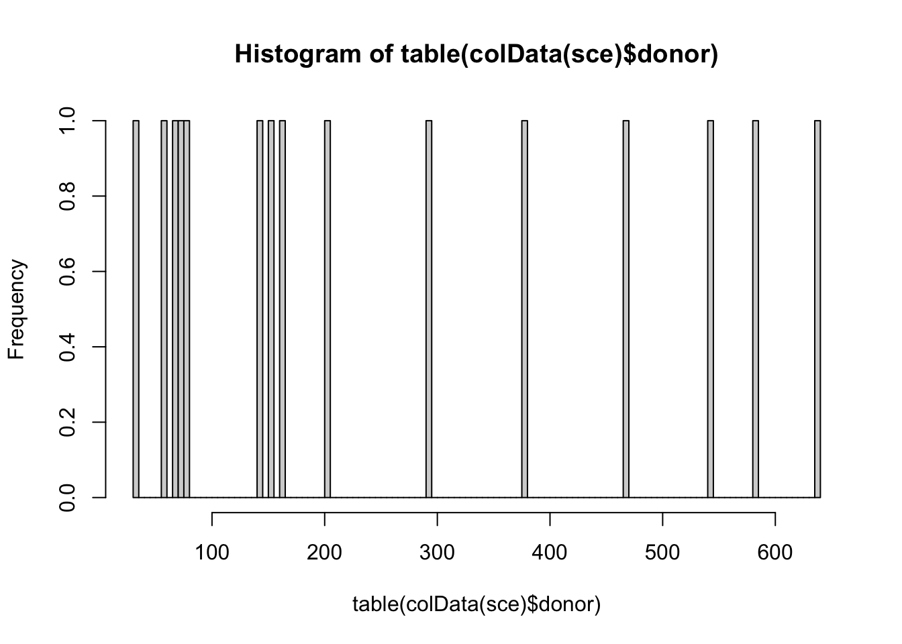
Below, we look how many cells are harvest per patent and per time point.
##
## day0 day1 day2 day3
## aowh 88 100 93 95
## aoxv 68 58 96 71
## babz 28 0 41 0
## bezi 13 11 4 3
## bima 0 0 44 31
## bokz 159 200 164 114
## cicb 42 21 75 26
## ciwj 40 27 35 39
## cuhk 41 47 39 27
## datg 185 147 136 115
## dixh 0 46 73 84
## eesb 66 106 103 195
## eipl 99 189 198 57
## eiwy 25 18 10 25
## eoxi 22 17 13 8We see that for many patients the data is complete, i.e. cells were sampled on all time points.
Practically, the cells were prepared in 28 batches. Since we here only look at a subset of the data, we see that only 14 of these batches are represented here.
## [1] 14##
## day0 day1 day2 day3
## expt_21 0 46 73 84
## expt_22 22 17 13 8
## expt_24 28 0 41 0
## expt_29 73 91 93 86
## expt_30 15 9 0 9
## expt_31 83 68 114 53
## expt_33 70 49 53 64
## expt_34 274 298 247 165
## expt_36 25 18 10 25
## expt_39 13 11 4 3
## expt_41 99 189 198 57
## expt_42 0 0 44 31
## expt_43 134 164 199 266
## expt_45 40 27 35 39The rowData slot of a SingleCellExperiment object allows for storing information on the features, i.e. the genes, in a dataset. In our object, the rowData slot currently contains the following:
## DataFrame with 6 rows and 1 column
## V1
## <character>
## 1 ENSG00000000003_TSPAN6
## 2 ENSG00000000419_DPM1
## 3 ENSG00000000457_SCYL3
## 4 ENSG00000000460_C1or..
## 5 ENSG00000001036_FUCA2
## 6 ENSG00000001084_GCLCTo improve our gene-level information, we may:
Split V1 into two columns, one with the ENSEMBL ID and the other with the gene symbol.
Display which chromosome the gene is located
Many more options are possible, but are not necessary for us right now.
rowData(sce) <- data.frame(Ensembl = gsub("_.*", "", rowData(sce)$V1),
Symbol = gsub("^[^_]*_", "", rowData(sce)$V1))
head(rowData(sce))## DataFrame with 6 rows and 2 columns
## Ensembl Symbol
## <character> <character>
## 1 ENSG00000000003 TSPAN6
## 2 ENSG00000000419 DPM1
## 3 ENSG00000000457 SCYL3
## 4 ENSG00000000460 C1orf112
## 5 ENSG00000001036 FUCA2
## 6 ENSG00000001084 GCLClibrary("biomaRt")
ensembl75 <- useEnsembl(biomart = 'genes',
dataset = 'hsapiens_gene_ensembl',
version = 75)
GeneInfo <- getBM(attributes = c("ensembl_gene_id", # To match with rownames SCE
"chromosome_name"), # Info on chromose
mart = ensembl75)
GeneInfo <- GeneInfo[match(rowData(sce)$Ensembl, GeneInfo$ensembl_gene_id),]
rowData(sce) <- cbind(rowData(sce), GeneInfo)
head(rowData(sce))## DataFrame with 6 rows and 4 columns
## Ensembl Symbol ensembl_gene_id chromosome_name
## <character> <character> <character> <character>
## 1 ENSG00000000003 TSPAN6 ENSG00000000003 X
## 2 ENSG00000000419 DPM1 ENSG00000000419 20
## 3 ENSG00000000457 SCYL3 ENSG00000000457 1
## 4 ENSG00000000460 C1orf112 ENSG00000000460 1
## 5 ENSG00000001036 FUCA2 ENSG00000001036 6
## 6 ENSG00000001084 GCLC ENSG00000001084 6## [1] TRUELet us first try the very simple and very lenient filtering criterion that we adopted for the Macosko dataset.
## keep
## TRUE
## 11231We see that this filtering strategy does not remove any genes for this dataset. In general, datasets from plate-based scRNA-seq dataset have a far higher sequencing depth than data from droplet-based protocols. As requiring a minimum expression of 1 count in at least 10 cells is a very lenient criterion if we consider that we have 36.000 cells, we should consider adopting a more stringent filtering criterium, like the filterByExpr from edgeR:
##
## day0 day1 day2 day3
## 876 987 1124 890keep2 <- edgeR::filterByExpr(y=sce,
group = colData(sce)$day,
min.count = 5,
min.prop = 0.4)
table(keep2)## keep2
## FALSE TRUE
## 857 10374## Loading required package: scuttle## Loading required package: ggplot2##
## Attaching package: 'scater'## The following object is masked from 'package:limma':
##
## plotMDS# check ERCC spike-in transcripts
sum(grepl("^ERCC-", rowData(sce)$Symbol)) # no spike-in transcripts available## [1] 0## [1] 13## DataFrame with 6 rows and 6 columns
## sum detected subsets_Mito_sum subsets_Mito_detected
## <numeric> <numeric> <numeric> <numeric>
## 21554_5#104 138676.3 5305 77.5935 7
## 21554_5#110 685123.5 5927 402.2876 8
## 21554_5#113 1671911.4 5613 1010.8276 9
## 21554_5#117 90419.4 6066 51.1047 6
## 21554_5#127 59463.2 6549 28.5289 6
## 21554_5#128 416482.7 7870 153.9212 7
## subsets_Mito_percent total
## <numeric> <numeric>
## 21554_5#104 0.0559530 138676.3
## 21554_5#110 0.0587175 685123.5
## 21554_5#113 0.0604594 1671911.4
## 21554_5#117 0.0565196 90419.4
## 21554_5#127 0.0479774 59463.2
## 21554_5#128 0.0369574 416482.7In the figure below, we see that several cells have a very low number of expressed genes, and where most of the molecules are derived from mitochondrial genes. This indicates likely damaged cells, presumably because of loss of cytoplasmic RNA from perforated cells, so we should remove these for the downstream analysis.
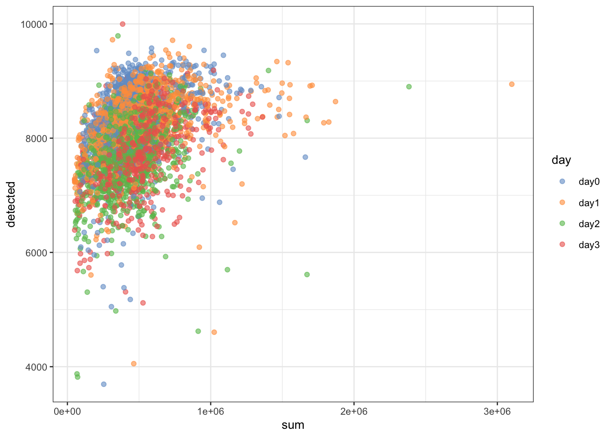
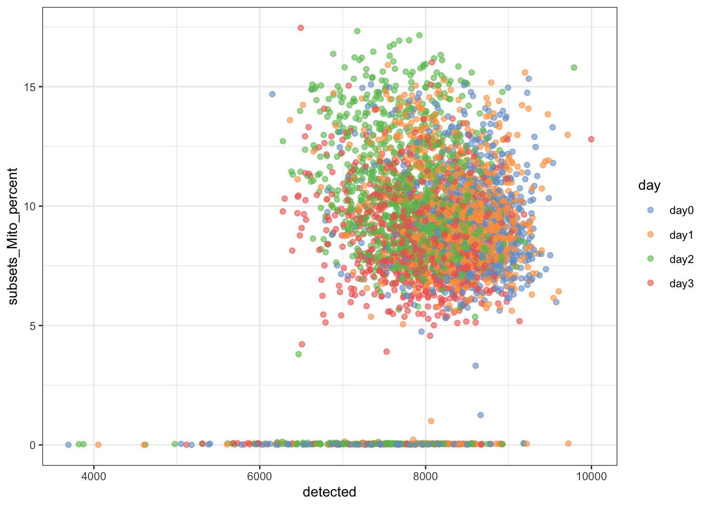
Below, we remove cells that are outlying with respect to
We remove a total of \(301\) cells, mainly due to low sequencing depth and low number of genes detected.
lowLib <- isOutlier(df$sum, type="lower", log=TRUE, nmads=4)
lowFeatures <- isOutlier(df$detected, type="lower", log=TRUE)
highMito <- isOutlier(df$subsets_Mito_percent, type="higher")
table(lowLib)## lowLib
## FALSE TRUE
## 3783 94## lowFeatures
## FALSE TRUE
## 3813 64## highMito
## FALSE TRUE
## 3852 25## discardCells
## FALSE TRUE
## 3706 171colData(sce)$discardCells <- discardCells
# visualize cells to be removed
plotColData(sce, x = "detected", y="subsets_Mito_percent", colour_by = "discardCells")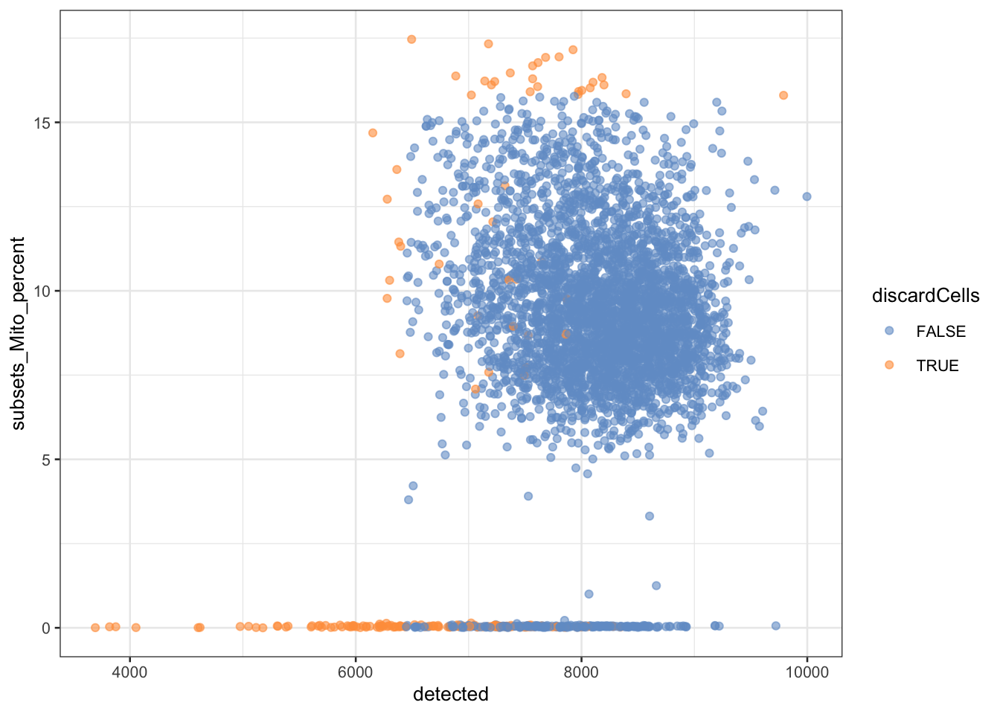
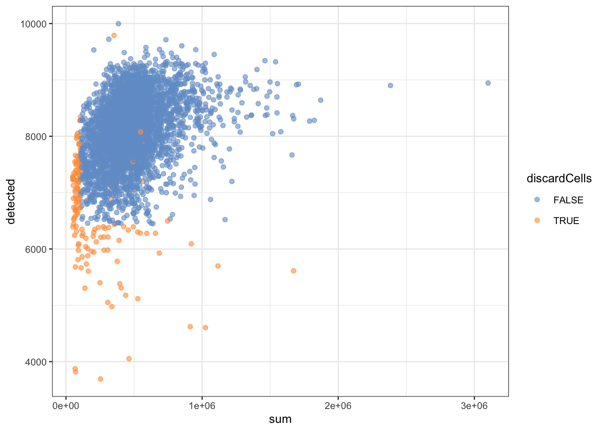
# visualize cells to be removed
plotColData(sce, x = "detected", y="subsets_Mito_percent", colour_by = "donor")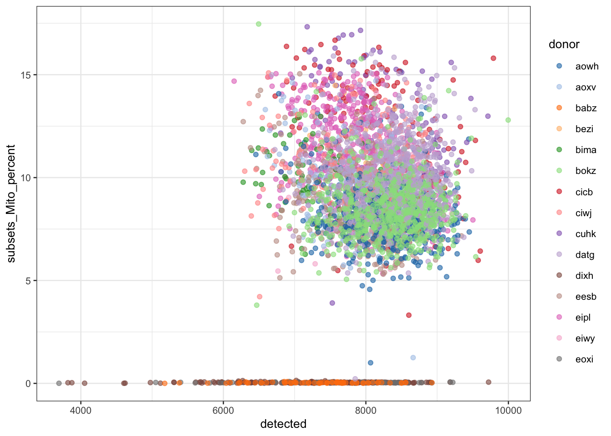
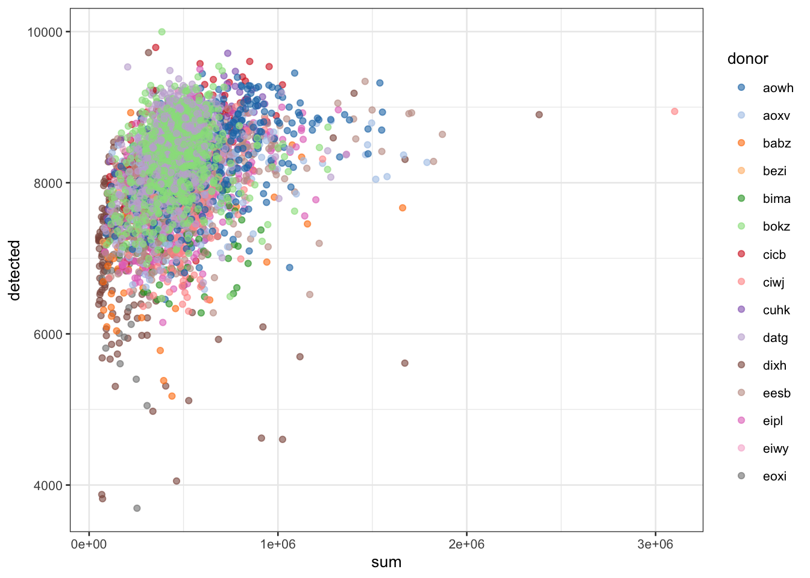
# visualize cells to be removed
plotColData(sce, x = "detected", y="subsets_Mito_percent", colour_by = "experiment")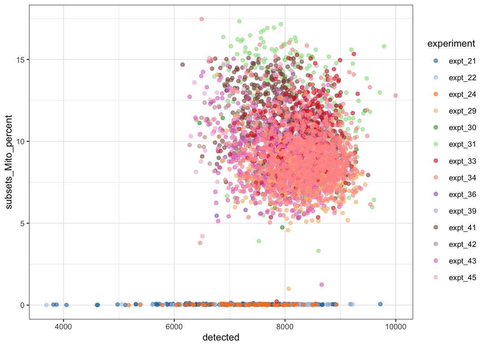
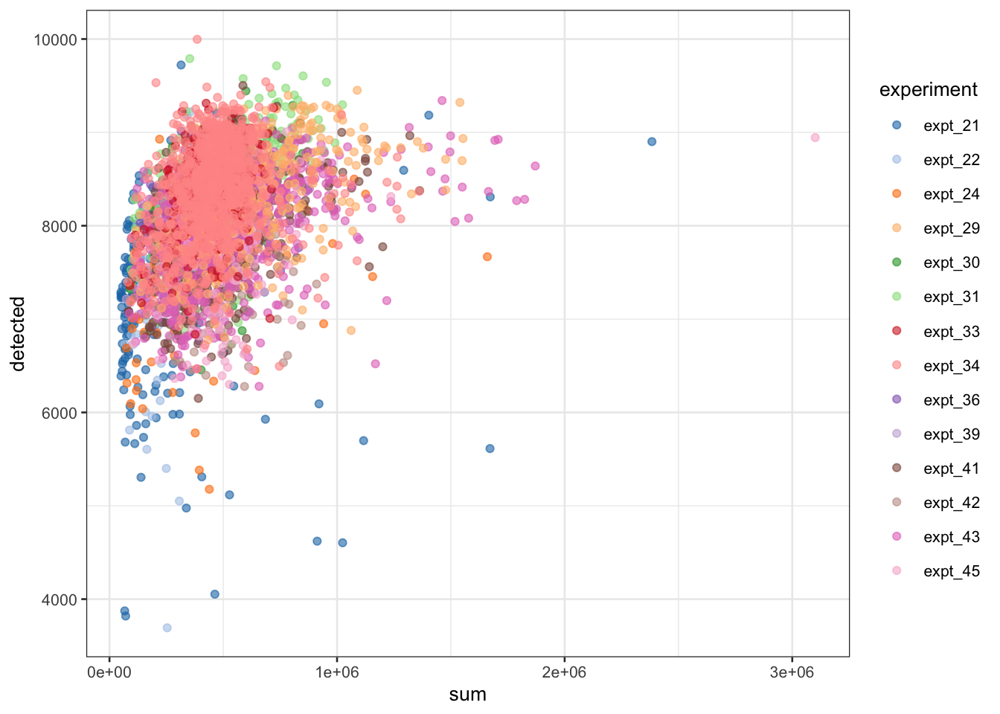
##
## FALSE TRUE
## aowh 374 2
## aoxv 292 1
## babz 54 15
## bezi 30 1
## bima 73 2
## bokz 634 3
## cicb 155 9
## ciwj 137 4
## cuhk 140 14
## datg 578 5
## dixh 109 94
## eesb 466 4
## eipl 539 4
## eiwy 78 0
## eoxi 47 13##
## FALSE TRUE
## aowh 0.994680851 0.005319149
## aoxv 0.996587031 0.003412969
## babz 0.782608696 0.217391304
## bezi 0.967741935 0.032258065
## bima 0.973333333 0.026666667
## bokz 0.995290424 0.004709576
## cicb 0.945121951 0.054878049
## ciwj 0.971631206 0.028368794
## cuhk 0.909090909 0.090909091
## datg 0.991423671 0.008576329
## dixh 0.536945813 0.463054187
## eesb 0.991489362 0.008510638
## eipl 0.992633517 0.007366483
## eiwy 1.000000000 0.000000000
## eoxi 0.783333333 0.216666667Most removed cells (fraction) are from patients dixh and babz.
##
## FALSE TRUE
## expt_21 109 94
## expt_22 47 13
## expt_24 54 15
## expt_29 342 1
## expt_30 32 1
## expt_31 295 23
## expt_33 235 1
## expt_34 977 7
## expt_36 78 0
## expt_39 30 1
## expt_41 539 4
## expt_42 73 2
## expt_43 758 5
## expt_45 137 4##
## aowh aoxv babz bezi bima bokz cicb ciwj cuhk datg dixh eesb eipl eiwy
## expt_21 0 0 0 0 0 0 0 0 0 0 203 0 0 0
## expt_22 0 0 0 0 0 0 0 0 0 0 0 0 0 0
## expt_24 0 0 69 0 0 0 0 0 0 0 0 0 0 0
## expt_29 343 0 0 0 0 0 0 0 0 0 0 0 0 0
## expt_30 33 0 0 0 0 0 0 0 0 0 0 0 0 0
## expt_31 0 0 0 0 0 0 164 0 154 0 0 0 0 0
## expt_33 0 0 0 0 0 0 0 0 0 236 0 0 0 0
## expt_34 0 0 0 0 0 637 0 0 0 347 0 0 0 0
## expt_36 0 0 0 0 0 0 0 0 0 0 0 0 0 78
## expt_39 0 0 0 31 0 0 0 0 0 0 0 0 0 0
## expt_41 0 0 0 0 0 0 0 0 0 0 0 0 543 0
## expt_42 0 0 0 0 75 0 0 0 0 0 0 0 0 0
## expt_43 0 293 0 0 0 0 0 0 0 0 0 470 0 0
## expt_45 0 0 0 0 0 0 0 141 0 0 0 0 0 0
##
## eoxi
## expt_21 0
## expt_22 60
## expt_24 0
## expt_29 0
## expt_30 0
## expt_31 0
## expt_33 0
## expt_34 0
## expt_36 0
## expt_39 0
## expt_41 0
## expt_42 0
## expt_43 0
## expt_45 0Most removed cells (fraction) are from patients dixh and babz. Most low library sizes seem to come from patient dixh; for patient babz the effect is less pronounced.
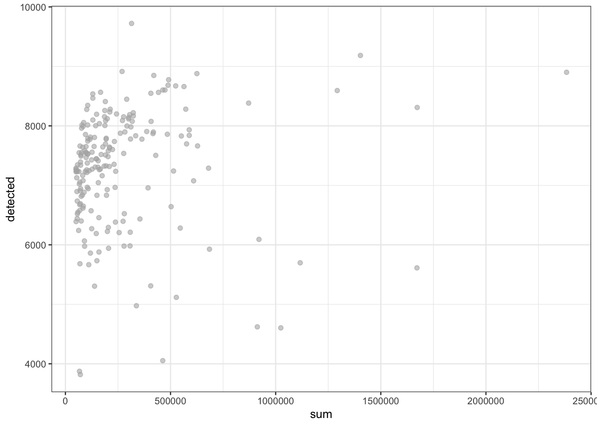
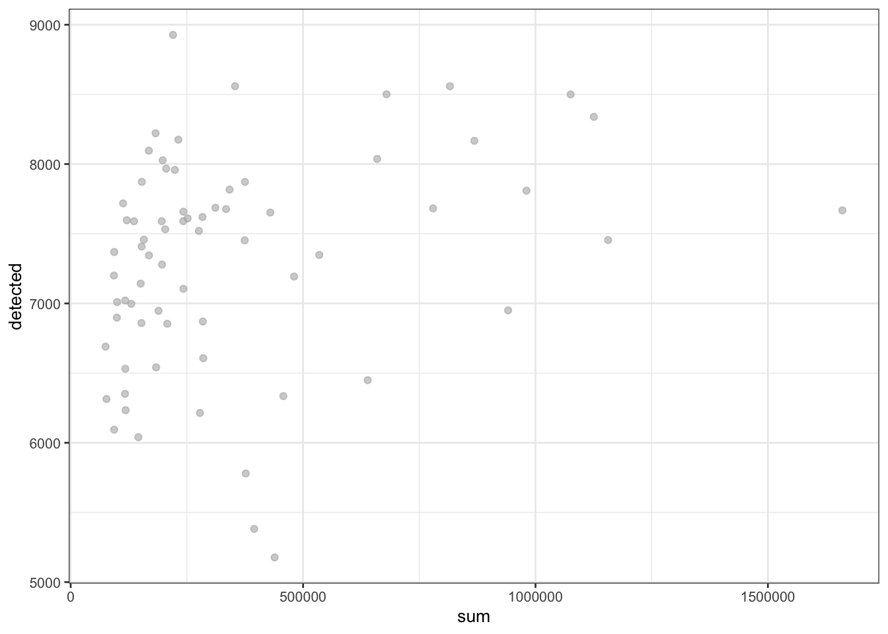
As such, we are mainly removing cells from specific patients and the respective batches in which they were sequenced. However, we want to be careful; we only want to remove technical artefacts, while retaining as much of the biology as possible. In our exploratory figure, we see that the cells we are removing based on the number of genes detected, are quite far apart from the bulk of the data cloud; as such, these cells are indeed suspicious. For the criterion of library size, we see that the cells removed there are still strongly connected to the data cloud. As such, we may want to relax the filtering criterion there a little bit. When we think of how the adaptive threshold strategy works, we may want to remove cells that are 4MADs away from the center, rather than the default 3 MADs.
## lowLib
## FALSE TRUE
## 3676 201# after seeing appropriate exploratory figure
lowLib <- isOutlier(df$sum, nmads=4, type="lower", log=TRUE)
table(lowLib)## lowLib
## FALSE TRUE
## 3783 94## discardCells
## FALSE TRUE
## 3706 171Note that these steps are not exact; different analysts will come with different filtering criteria for many of the steps. The key ideas are that we let appropriate exploratory figures guide us to make reasonable choices; i.e., we look at the data rather than blindly following a standardized pipeline that may work well in many cases, but maybe not our particular dataset.
This does not make much sense for plate-based data! While we could imagine the presence of empty plate wells for the SMART-Seq2 experiment, these are typically detected and removed upstream of our analysis using laser technology.
Again, this step typically does not make much sense for plate-based data. While we could imagine the presence of plate wells in which more than two cells are present for the SMART-Seq2 experiment, these are again typically detected and removed upstream of our analysis using laser technology.
If we would use scDblFinder to detect doublet cells on this dataset, we would see that only a very small fraction of the cells would be removed. These removed cells could correspond to actual doublets that were missed by the upstream doublet detection technology, or more likely could correspond to false positive doublets of the scDblFinder doublet detection procedure.
For normalization, the size factors \(s_i\) computed here are simply scaled library sizes:
\[ N_i = \sum_g Y_{gi} \] \[ s_i = N_i / \bar{N}_i \]
sce <- logNormCounts(sce)
# note we also returned log counts: see the additional logcounts assay.
sce## class: SingleCellExperiment
## dim: 10374 3706
## metadata(0):
## assays(2): counts logcounts
## rownames: NULL
## rowData names(4): Ensembl Symbol ensembl_gene_id chromosome_name
## colnames(3706): 21554_5#128 21554_5#142 ... 24947_6#91 24947_6#98
## colData names(101): assigned auxDir ... discardCells sizeFactor
## reducedDimNames(0):
## mainExpName: NULL
## altExpNames(0):# you can extract size factors using
sf <- librarySizeFactors(sce)
mean(sf) # equal to 1 due to scaling.## [1] 1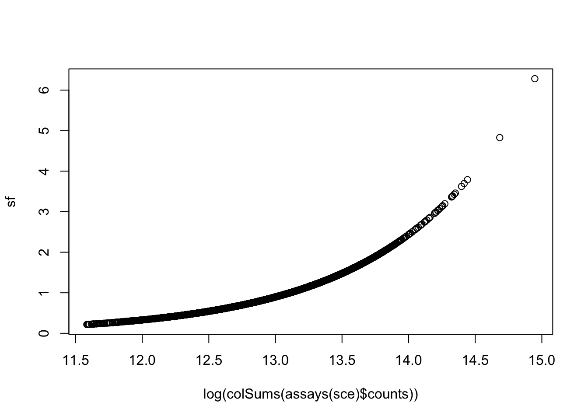
— end lab session 1 —